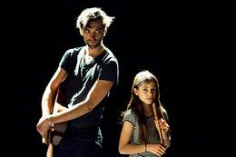
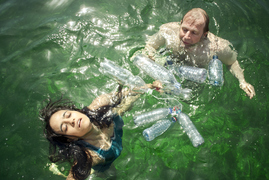
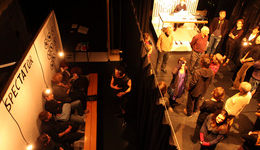
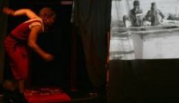

3–––times

Ein internationales Theaterprojekt von Diana Rojas (CH), Melika Ramic (AT) und Tammy Reichling (LU) in Koproduktion mit dem Theater Stadelhofen Zürich, dem internationales Theaterfestival Schäxpir in Linz und Neimënster, Luxemburg
Petopia - Crashlandung auf der Müllinsel

Ein Mandarina&Co-Projekt in Koproduktion mit dem Theater Stadelholfen Zürich, dem Theater Tuchlaube Aarau und dem Schlachthaus Theater Bern
200mm (thinking about social distance)

Ein Projekt von Diana Rojas und Martin Schick, in Koproduktion mit dem Konzeptbüro der Roten Fabrik Zürich und dem Theater Tuchlaube Aarau
Was gisch mer für d'Welt?
Ein Mandarina&Co-Projekt in Koproduktion mit dem Theater im GZ Buchegg
Choco Loco - Das Kakaogeheimnis vom Amazonas
Ein Mandarina&Co-Projekt in Koproduktion mit dem Theater Tuchlaube Aarau und dem Schlachthaus Theater Bern
Y tu? Wer bisch du?

Ein kolumbianisch-schweizerisches Abenteuer ab 5 Jahren!